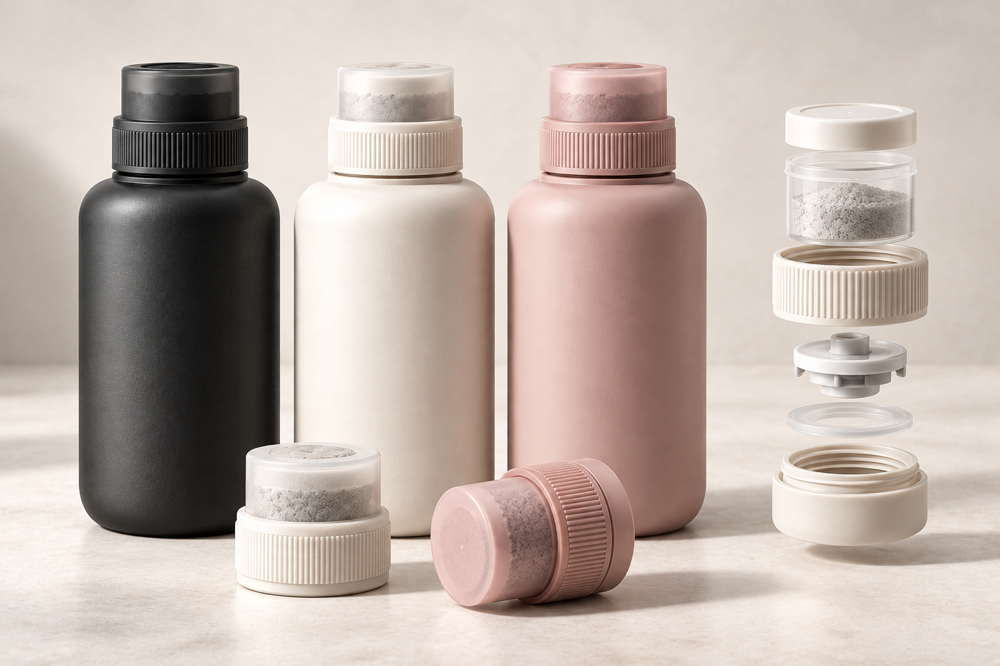

◉
独立干粉仓
营养粉预装在瓶盖内，使用前与水分开。
为每一次饮水，带上恰好的营养补充。线上了解适用性，线下轻轻一拧，让单次配方落入杯中。

MEET圆润磨砂瓶身，顶部旋拧释粉。首购体验套装将适配水杯、独立营养瓶盖与使用说明放在一起；先了解适用性，再确认具体配方。
瓶盖负责释放，水杯负责承接；每次使用的配方与份量，在购买前说清楚。
营养粉预装在瓶盖内，使用前与水分开。
先旋紧密封，再继续拧至触发位置释放。
圆润磨砂外观，水杯可重复使用、瓶盖按需补购。
干粉仓、旋转触发件、保留式阀片与密封结构共同组成瓶盖内部。结构为概念设计，须经过密封、防潮、释放完整性及食品接触材料验证。
使用专用适配水杯，加入说明所示水量。
先旋紧密封，再拧至清晰的触发位置。
营养仓打开，粉体落入水中；摇匀后饮用。
扫码查看配方批次；需要时再补购，不默认续费。
「一拧」提供针对性的日常营养补充，不追求一杯水满足所有营养需求，也不替代正常饮食。偏好可以表达，配方与剂量由经过验证的规则和专业审核共同确定。
↗标准配方库是起点。具体适用性、含量与包装方式需经验证与审核。
了解维生素类成分如何融入你的日常饮食与补充习惯。
结合活动场景与饮水习惯，了解电解质相关补充方向。
先核对现有补剂与饮食，再判断是否需要进一步评估。
配方卡为概念方向示意，不代表已上市产品。成分形式、含量、适用范围、溶解表现及标识均须依据最终产品类别完成研发与核验后确定。
回答几项和营养匹配相关的问题，看看下一步可能是什么。信息不足时，我们会提示补充；不适合自动推荐时，就先停下来。
你的信息，由你决定。本原型仅在当前浏览器展示流程，不保存或上传填写内容。正式服务需说明用途、取得单独同意并提供资料管理入口。
首购建立使用体验，后续是否购买由你决定。
一周期适用瓶盖 + 赠送适配水杯 + 使用指导
与已确认配方对应的单次营养瓶盖
例如补充装售价 249 元，若制造 84 元、包装物流 18 元、订单审核与服务 20 元，剩余 127 元还需覆盖获客、研发、售后、固定运营与税费，不能直接视为净利润。
每个产品都应对应配方版本、批次、生产日期和保质期。扫码可以查看信息、登记使用，但不代表已经实际摄入。
不会。产品提供针对性的营养补充，不以一杯满足全部营养需求为目标，也不替代多样化饮食。
涉及疾病、用药或异常检查结果时，先由医生或专业人员判断适用性；原型不会为此生成自动购买方案。
不能。网页提供成分信息与偏好收集，最终配方和剂量需来自验证过的配方库并经过适用性审核。
不作此承诺。旋拧触发的是机械释放，溶解或分散情况取决于具体配方，需按说明摇匀。